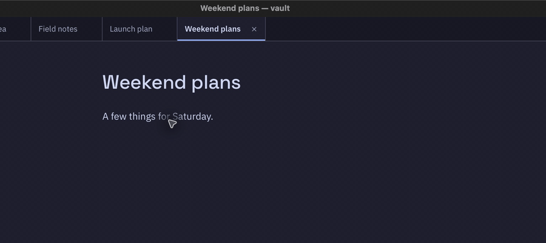
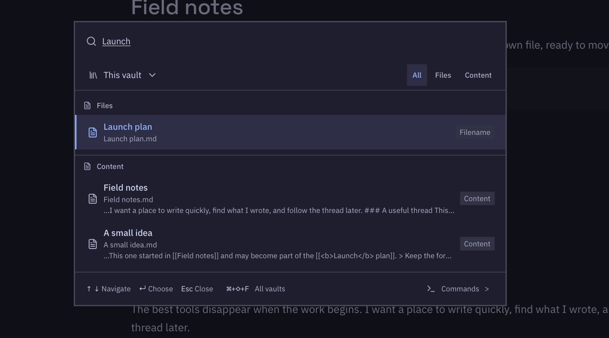
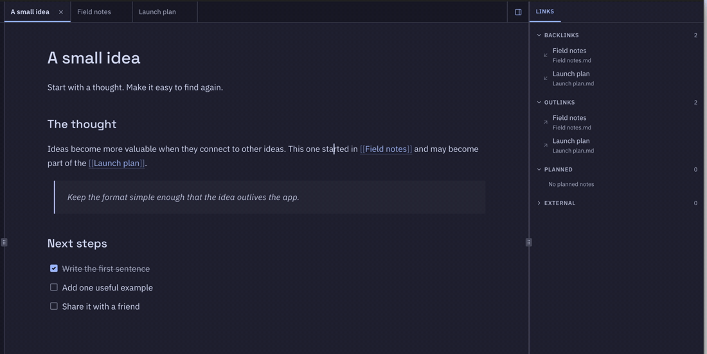
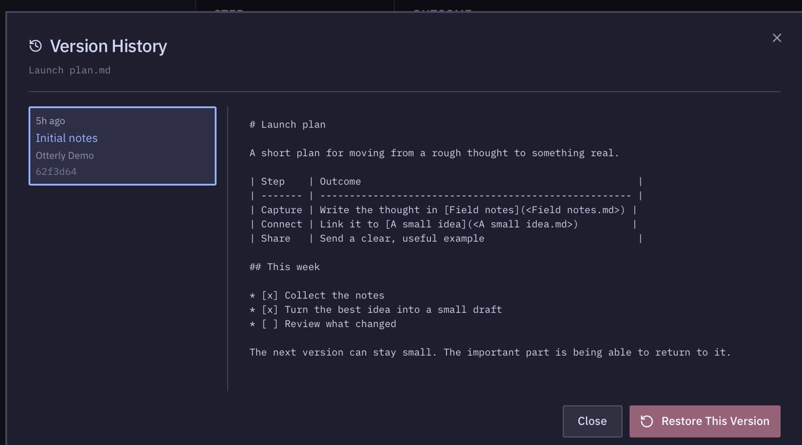
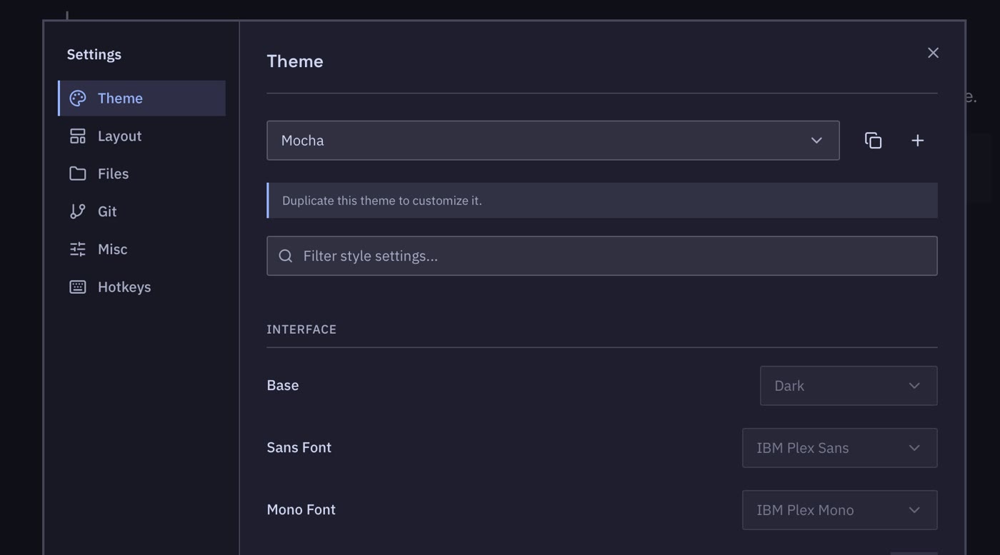
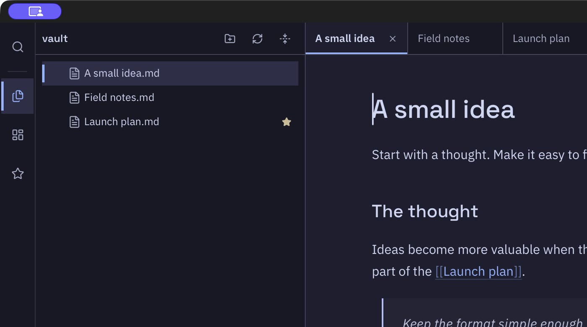

Write and find your notes.
Otterly keeps your Markdown files in a folder you choose. You can link notes, search them, and see earlier versions.
Watch a short tour of the desktop app. Captured in the desktop app
Write
Start typing. Formatting shows up as you go.
Headings, checklists, and tables look finished while you write, so you're never staring at a wall of symbols. Press / when you want a table or a code block.

Find
Find any note in a couple of keystrokes
Press Cmd O and type any word you remember. Otterly looks through note titles and everything inside them, so it doesn't matter which folder a note ended up in.

Connect
Link one idea to the next
Type [[ and pick a note to link it. The side panel
shows every note that points back, which is handy when an old
idea becomes useful again.
Rename a note and the links to it keep working.

Undo
Go back to any earlier version
Keep your notes in Git and Otterly shows how each note looked before. About to rewrite something big? Save a checkpoint first and you can always get back to it.

Make it yours
Pick a look and the keys you like
Choose a light or dark theme, or build your own with different fonts and colors. Keyboard shortcuts can be changed in settings too.

Keep your files
Your notes are ordinary files
Each note is a .md file in a folder you picked.
Back it up, sync it, or open a note in another app. If you ever
stop using Otterly, your notes stay right where they are.

Download Otterly
It's free and there's nothing to sign up for. Grab the file for your computer from the latest release. Otterly updates itself after that and asks before it restarts.
| Your computer | Pick this file |
|---|---|
| Mac |
The .dmg. It works on Apple Silicon and Intel.
|
| Windows | setup.exe or .msi |
| Linux | .AppImage or .deb |
| Arch Linux | otterly-appimage on the AUR |